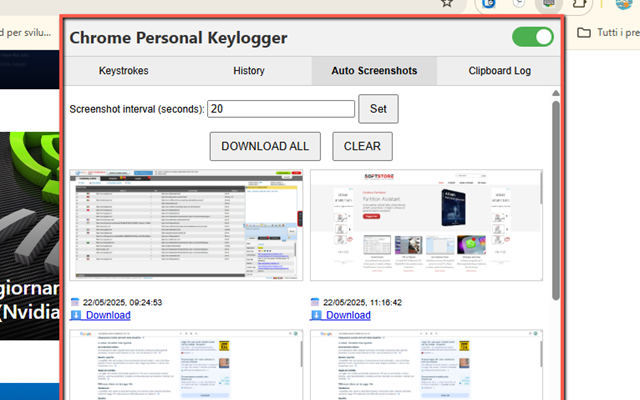
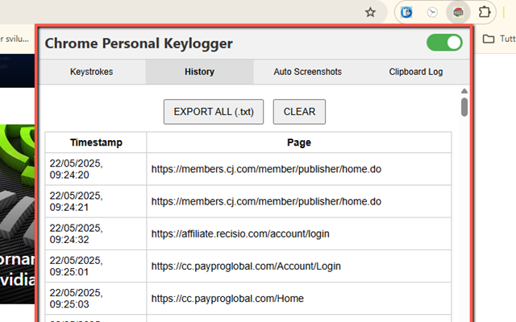

Chrome Event KeyLogger – Monitor Every Action in Your Browser
Chrome Event KeyLogger is your all-in-one browser activity monitor. It records every keystroke, tracks visited pages, captures clipboard copies, and takes periodic browser screenshots. Perfect for productivity, parental supervision, or self-monitoring.
🛠 Features at a Glance
- ⏺ Keystroke logging with timestamp and page
- 🌐 History tracking – log each site you visit
- 📋 Clipboard monitor for all copied text
- 📷 Auto screenshots at customizable intervals
- 🧲 Clean, tabbed UI with switch to enable/disable logging
- 🛡 All data saved locally, not shared anywhere
- 🔐 PRO mode required to export logs or download screenshots
📋 How to Use
- Install from the Chrome Web Store.
- Open the extension from your Chrome toolbar.
- Ensure the tracker is ON by default (green switch).
- Navigate the four tabs: Keystrokes, History, Clipboard, Screenshots.
- Use the Clear or Export buttons under each section (requires PRO for export).
🔓 PRO Mode
With PRO unlocked, you can export data in TSV format or download all screenshots. A license code is required to activate PRO — once entered, it stays saved.
📸 Screenshots


Whether you’re auditing your work, keeping an eye on usage, or documenting changes, Chrome Event Logger is a powerful and private tracking tool right inside your browser.
🛒 View on Chrome Web Store